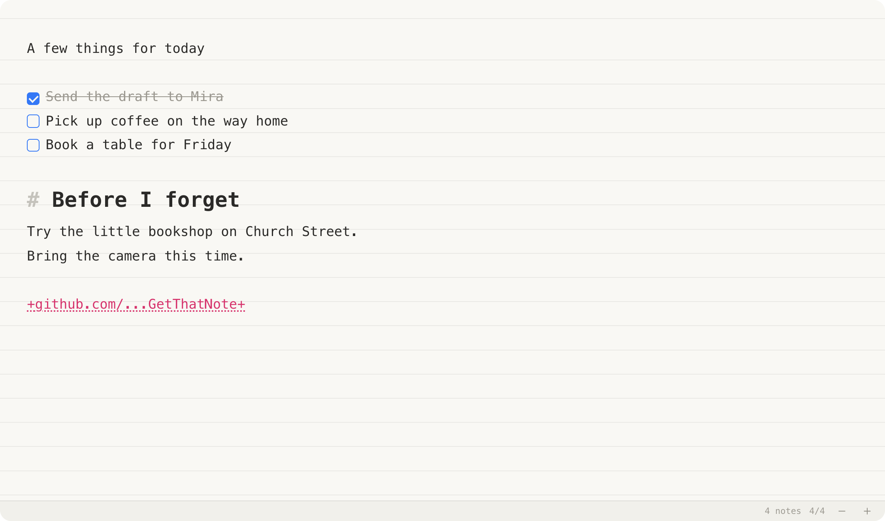
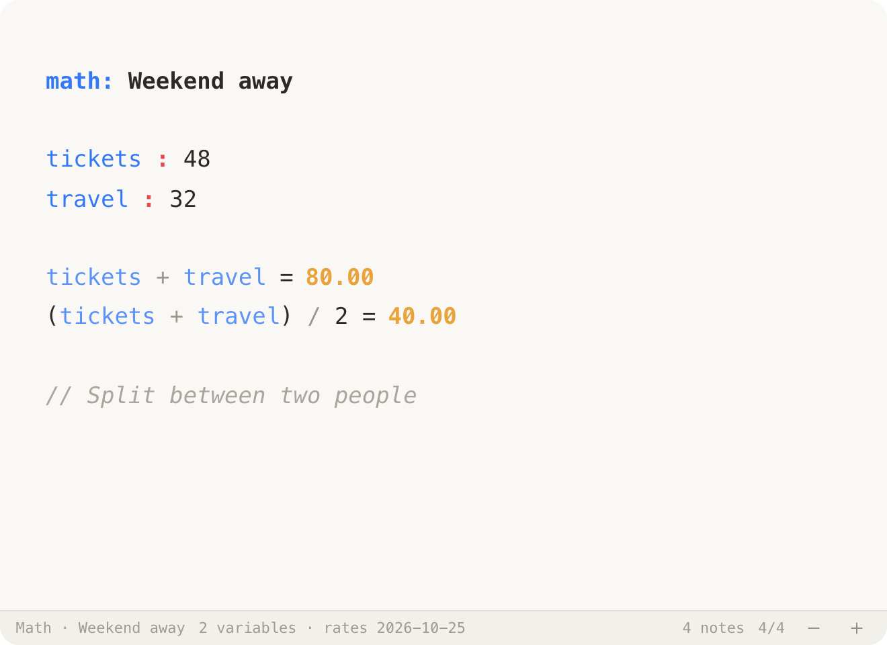

A free scratchpad for macOS
For the things you
just need to jot down.
A thought, a list, a quick calculation. Keep a little space on your Mac for the things that don’t need a document.
Download for Mac
macOS 13+ · Apple Silicon + Intel
Open it with ⌥A.
Write something.
Get back to it.

More than plain text.
Only when you need it.
Start a note with math to calculate as you write. Use list for checkboxes, or code: py for a highlighted snippet.
Nothing to set up for a plain note. Just start typing.
Read all commands ↗
A few things worth knowing.
- Close at hand
- A global shortcut, pin-on-top, menu bar modes, and slotted notes. Keep your scratchpad where you work.
- Small useful tools
- Timers, Markdown, find and replace, OCR, and AutoPaste for collecting what you copy.
- Your notes, on your Mac
- Local storage and automatic backups. Optional iCloud Drive sync when you want notes on another Mac.
- Take it with you
- Export to text, Markdown, PDF, Apple Notes, Obsidian, or Bear. Your scratchpad doesn’t have to be the final destination.
Installing
Download from Releases, open the DMG (or unzip the ZIP), and drag GetThatNote into Applications.
The app is not notarized. If macOS blocks the first launch, open System Settings → Privacy & Security → Open Anyway.